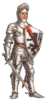
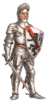
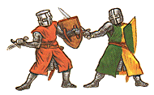
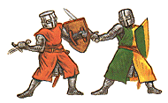

| koning van Frankrijk, graven van Vlaanderen, Henegouwen en Holland-Zeeland | keizer van het Duitse Rijk, hertogen van Brabant, Limburg, Luxemburg | |
| 800-999 9de en 10de eeuw | 9º-10º Fr Vl He HZ | 9º-10º D Br Li Lu |
| 1000-1199 11de en 12de eeuw | 11º-12º Fr Vl He HZ | 11º-12º D Br Li Lu |
| 1200-1399 13de en 14de eeuw | 13º-14º Fr Vl He HZ | 13º-14º D Br Li Lu |
| 1400-1599 15de en 16de eeuw | 15º-16º Fr Vl He HZ | 15º-16º D Br Li Lu |
| 1600-1799 17de en 18de eeuw | 17º-18º | |
Geschiedenis moet volgens mij veel meer zijn dan een droge opsomming van jaartallen en namen, maar desondanks zoek ik al jaren naar een overzichtstabel waarin juist deze gegevens vermeld staan.
Het helpt velen waaronder mezelf om door het bos de bomen nog te zien, het geeft een menu, een kapstok waaraan de echte geschiedenis kan opgehangen worden. Een historische figuur kan gesitueerd worden in de tijd met in één oogopslag ook de keizer, koning, hertogen en graven die tijdgenoten waren .
Dit sluit volgens mij ook goed aan bij de werkelijkheid waarin de verschillende "lenen" niet als afzonderlijke op zich staande delen mogen gezien worden, maar een grote interactie in relatie met elkaar hadden. Denken we maar aan de vele veldslagen en de politieke huwelijken. Op de echte geschiedenis van onze gewesten, namelijk deze van de mensen die er woonden, heeft de officiele geschiedenis van vorsten en leenheren natuurlijk ook een belangrijke invloed.
Ik vond een soortgelijk overzicht niet zo onmiddelijk en zeker niet specifiek voor de regio die we nu België noemen, vandaar dat ik er enige jaren geleden dan maar zelf aan begonnen ben. Iedere verbetering is altijd welkom!!!


 


 


webmaster: Johan Andriessen
Wilrijk Belgium
©2019